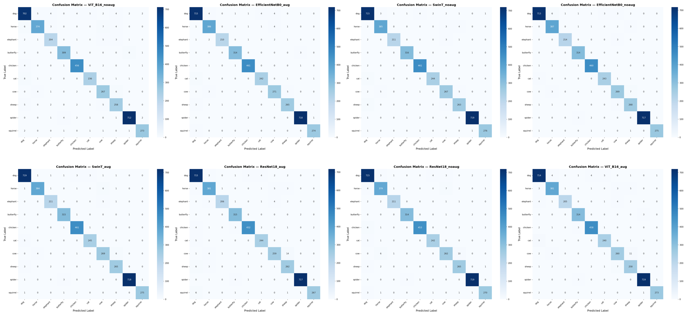
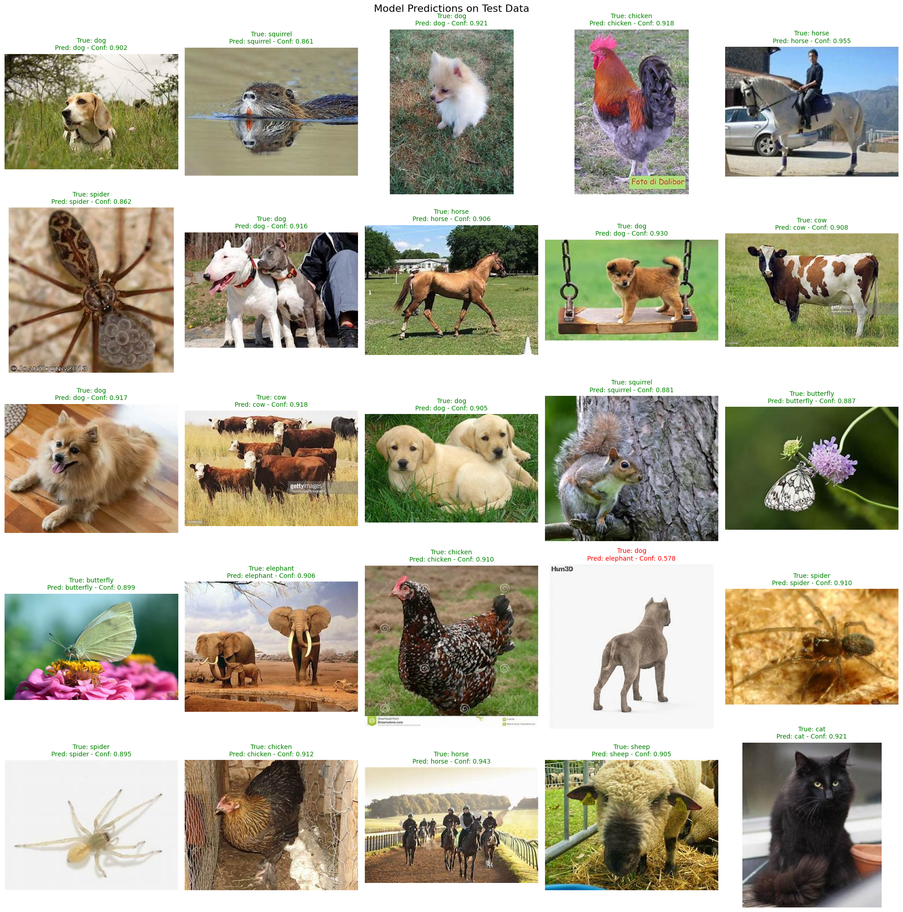

BTL 1: Phân loại Ảnh (CNN & ViT)
Khảo sát hiệu năng và thời gian hội tụ của các kiến trúc thị giác máy tính trên dữ liệu ảnh.
1. Khám phá Dữ liệu (EDA)
Quá trình xây dựng mô hình phân loại ảnh bắt đầu với việc tiền xử lý và tăng cường (Data Augmentation) để giảm overfitting. Tập dữ liệu bao gồm các hình ảnh kích thước lớn, yêu cầu resize và normalize trước khi đưa vào PyTorch DataLoader.


2. Huấn luyện (Training) & Đánh giá (Evaluation)
Hai kiến trúc được so sánh trực tiếp là Convolutional Neural Networks (Ví dụ: ResNet, EfficientNet) và Vision Transformers (ViT-Base).
ViT yêu cầu tập dữ liệu lớn để học được các representation mạnh do không có các inductive biases của Convolution layer. Trong khi đó, CNN hội tụ nhanh hơn trên các tập dữ liệu trung bình.

